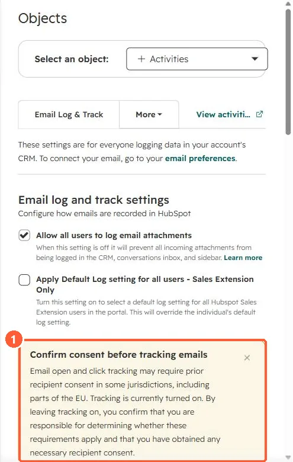

Short answer
Use the HubSpot Sales Office 365 add-in. It needs a Microsoft 365-hosted mailbox and works in classic and new Outlook for Windows, Outlook for Mac and Outlook on the web. The older Outlook desktop add-in is in maintenance mode and only runs in classic Outlook for Windows. Most connection failures are on the Microsoft side: Outlook installed from the Microsoft Store, Office 365 bought through GoDaddy, signing in with an alias, blocked third-party cookies, or a tenant that needs admin consent for the HubSpot Sales app in Microsoft Entra ID.
1. Which add-in you should have
| Your setup | Use |
|---|---|
| Microsoft 365-hosted mailbox, any current Outlook (classic or new Windows, Mac, web) | HubSpot Sales Office 365 add-in |
| Mailbox not hosted on Microsoft 365, classic Outlook for Windows | HubSpot Sales Outlook desktop add-in (maintenance mode) |
| Microsoft 365 GCC High | Office 365 add-in, centrally deployed by your Microsoft 365 admin |
| Office 365 from GoDaddy | Neither add-in. GoDaddy does not support third-party apps. |
HubSpot stopped developing the desktop add-in because of the changes in the new Outlook for Windows. It is still supported in classic Outlook, but if you switch to new Outlook, the Office 365 add-in is installed automatically in its place.
To open the Office 365 add-in in new Outlook or Outlook on the web, click Apps in the main ribbon and pick HubSpot Sales. If you use several mailboxes, install it in each one.
2. Connect the inbox first
The add-in only works with a connected inbox. In HubSpot, go to Settings, General, Email and click Connect personal email (1). Aliases (2) and signatures (3) are set on the same page.

Connect the primary address. Outlook lets you sign in with an alias, but HubSpot only connects the primary mailbox. If the add-in keeps asking you to connect your inbox in a loop, that is almost always the cause. Add the alias in HubSpot afterwards. See connecting your inbox and logging sales emails.
3. Connection errors and what fixes them
| Error | Fix |
|---|---|
| Interaction required | Your user needs access to the HubSpot Sales application in Azure AD (Microsoft Entra ID). Ask your Microsoft 365 admin. |
| Need admin approval | The admin can allow user consent for apps from verified publishers, turn on the admin consent workflow, or grant tenant-wide consent and add users to the HubSpot Sales app under Enterprise applications. |
| Approval required | Enter a justification. It goes to your IT admin, who must approve the third-party app. |
| Outlook mailbox is not enabled for REST API access | The mailbox must be in Exchange Online with an active license, not hybrid, on-premises or mid-migration. After a tenant migration, re-grant the HubSpot Sales app's permissions in Entra ID and reconnect. |
| API access not enabled for mailbox (shared mailbox) | Connect it another way, such as IMAP, or through Exchange if you run an Exchange server. |
| Access to OData is disabled | An Application Access Policy is blocking HubSpot. Update it, and allow HubSpot's user agent if an allowlist is enforced. |
| Inbox shows as outlook_[characters]@outlook.com | The account's primary alias is not on a Microsoft domain, which HubSpot does not support. Follow Microsoft's fix. |
The admin consent errors are the ones people hit most. The fix is in Microsoft's admin center, not in HubSpot, so send this table to whoever manages your Microsoft 365 tenant.
4. The add-in is grayed out or keeps logging you out
- Grayed out in Outlook for Windows or Mac: the reading pane is off or hidden. Turn it on.
- Missing completely: check your Outlook version. Outlook installed from the Microsoft Store is not compatible. It has to be the Click-to-run version.
- Login loop in Outlook on the web: the browser is blocking third-party cookies. Allow them for Outlook.
- Not allowed to install: your email admin has to permit third-party add-ins. HubSpot recommends the IT team deploys it centrally through the Microsoft 365 admin center.
If the add-in is grayed out in both the message and the compose ribbon after these checks, the problem is in the Outlook install, not HubSpot.
5. What the add-in does once it works
While composing in Outlook you can log and track the email, and insert templates, documents, meeting links and snippets. Enrolling a contact in a sequence from Outlook needs a Sales Hub or Service Hub Professional or Enterprise seat. HubSpot's own email settings (1) control logging and tracking for the add-in too.


Logging rules, such as which domains never log, are set in HubSpot and apply to the add-in. See the never log list. For sequences in Outlook, see sequences.
6. Government cloud (GCC High)
HubSpot can connect inboxes hosted in Microsoft 365 GCC High, which lets you send one-to-one and sequence emails from the CRM and log them. It is a beta a Super Admin opts the account into. Sending and syncing go through Microsoft's .us version of the Graph API, and the Office 365 add-in has to be centrally deployed by your Microsoft 365 admin.
HubSpot states plainly that it is not CMMC or FedRAMP compliant. Get your legal team's view before connecting a government mailbox.
To connect: Settings, General, Email, Connect personal email, enter the address, then Connect to Outlook 365 GCC High. If HubSpot does not detect the provider, choose Microsoft Outlook (GCC High) yourself.
7. What is changing for 2027
- Plan your move off the desktop add-in. It is in maintenance mode and tied to classic Outlook for Windows. As your company moves people to new Outlook, they need a Microsoft 365-hosted mailbox and the Office 365 add-in. Mailboxes not on Microsoft 365 lose the add-in route entirely, so check where yours are hosted.
- Tenant moves break connections. The REST API error above shows up after Microsoft 365 tenant migrations. If your company is consolidating tenants, plan to reconnect every HubSpot inbox afterwards.
- Approve the app once. If your tenant restricts user consent, get the HubSpot Sales app approved tenant-wide before rolling HubSpot out, instead of handling the consent errors one user at a time.
Common questions
Outlook keeps asking for admin approval when I connect. What do I send IT?
Ask them to approve the HubSpot Sales app in Microsoft Entra ID, either by granting tenant-wide admin consent or by turning on the admin consent workflow, and then to add you to the app under Enterprise applications if they restrict access.
Can I use HubSpot with Office 365 from GoDaddy?
Not with the add-in. HubSpot's KB says GoDaddy does not support third-party apps.
Does the add-in work in new Outlook for Windows?
The Office 365 add-in does. The older desktop add-in does not, and HubSpot installs the Office 365 add-in automatically when you switch.
I see the add-in in Outlook on the web but not in Windows.
Check that Windows Outlook is the Click-to-run version, not the Microsoft Store version, and that the reading pane is on.
Sources
- HubSpot Knowledge Base: Install HubSpot Sales for Gmail and Office 365
- HubSpot Knowledge Base: Troubleshoot the HubSpot Sales Office 365 add-in
- HubSpot Knowledge Base: Troubleshoot inbox and calendar connection errors
- HubSpot Knowledge Base: Use sales tools with the Office 365 add-in
- HubSpot Knowledge Base: Connect Microsoft 365 GCC High inboxes
- HubSpot Knowledge Base: Outlook desktop add-in FAQ
- Microsoft: Centralized deployment of add-ins
- HubSpot Community: Outlook integration keeps asking for admin approval
- HubSpot Community: Email integration with GoDaddy Office 365
- HubSpot Community: Office 365 email unable to connect